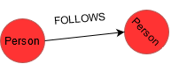

In this project we use lombok to save some lines of code. So stuff like @ToString, @Getter, @Setter, are just genaretig some methods. Sometimes it is necessary to still write it yourself. For example if i have a class that has a realtionship with itself, the generated ToString could get recursive and get you a overflow exception.
A persistable class where we give every node and relation class an Id.
The Id is needed for the neo4j driver. It will not work without it. You can define an Id with the @Id annotation and the @GeneratedValue will automatically generate an Id with the type Long in the database. Default it generates the next available number. You can change your key generation for example: @GeneratedValue(UUIDStringGenerator.class)
You can change your key generation for example:
Annotion @Node defines the class as a node. In this scenario, the class is a node named "Person"
The Person node hast two properties: username and email.
Annotation @Relationship creates a relationship. In this case the relation is "FOLLOWS". In default the reation arrow will point to the friend Node.
You can adjust the arrow pointing like in this annotaion.
Add method for the List of the friends the person follows
Neo4j driver needs a no parameter constructor. Lombok generated sadly does not work
@RelationshipProperties can make a class into a relation with properties
@TargetNode the node where the relation will point to.
Make the friend relation as a List of the FriendRelation class
The output of this relation would look like this:

The cool thing about that is, that the FOLLOWS relation stores data too so that the person does not have to save a mass of data.
Object Mapping
To convert models between the database and domain easier, we are using the object mapping technike. It prevents inserting same models with different bulding blocks.
Example of a Graph model:
We are mapping our objects in a graph. The colored circles are the nodes. The nodes are connected with arrows which are the relations. Nodes can also be seen as entities and will be coded as java classes while the relations are associated attributes where the object is the target node.